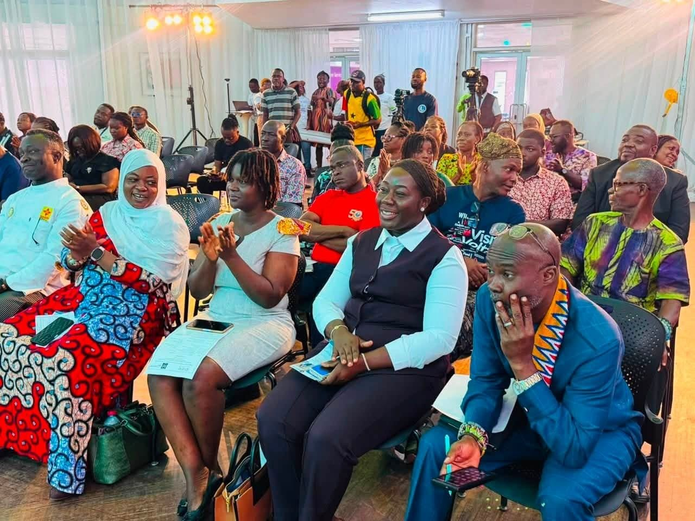
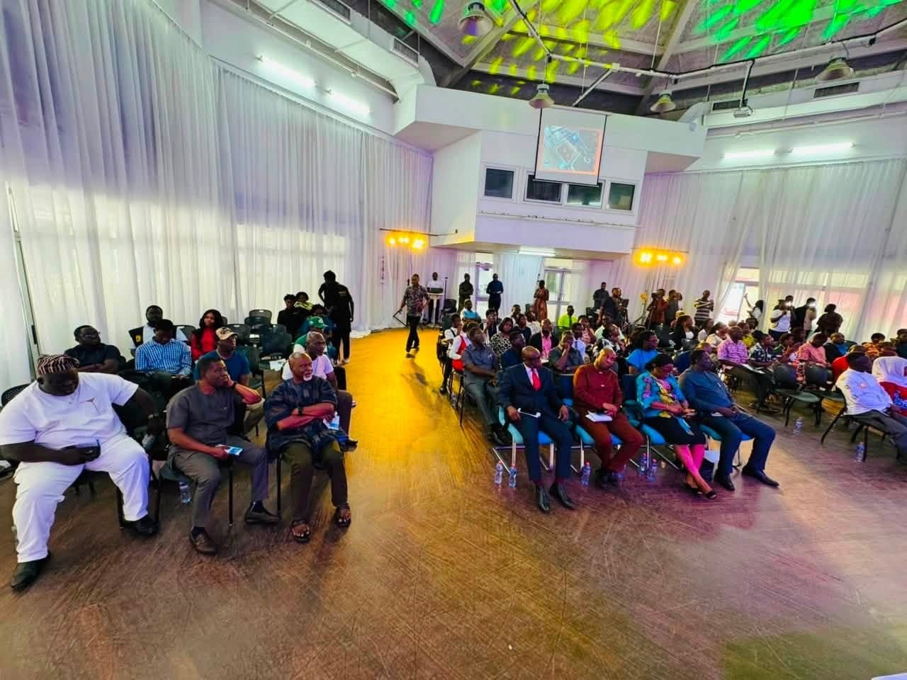
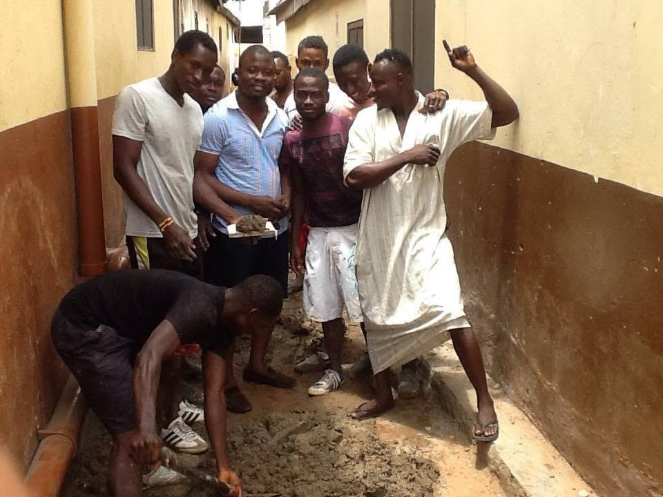
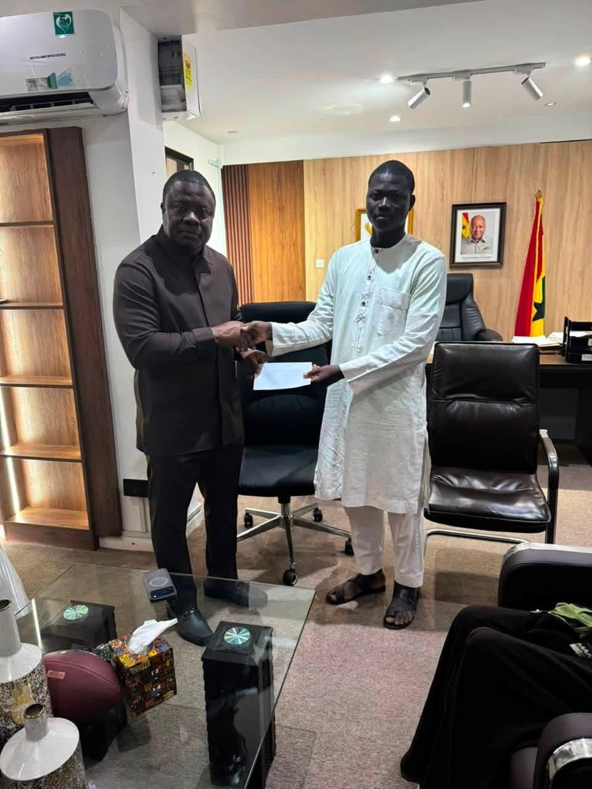

Chapter 05 · The Constituency
Dense, young, proudly Zongo.
Ayawaso North sits in the heart of Greater Accra. Its challenges are the challenges of a city that grew faster than its drains and its classrooms; its strength is a community that shows up for its own.
The Place
A constituency that shows up.
Maamobi, Nima, Kotobabi, Accra New Town, Kawukudi, Kwatso and the surrounding communities make up Ayawaso North. It is young, dense, enterprising and proudly Zongo, a place where commerce spills onto the street and everyone is somebody's neighbour.
The work here is unglamorous and specific: clearing water off the streets, giving young people somewhere to play, and making sure the constituency's name is spoken in the rooms where budgets are decided.



The Communities
Seven names, one seat.
- Maamobi
- Nima
- Accra New Town
- Kotobabi
- Kawukudi
- Kwatso
- Alajo
On the Record
The gaps he keeps naming.
Putting an absence on the record is the first step to getting it funded. These are the ones the MP raises, publicly and repeatedly.
- Government schools for Kwatso and Maamobi East Two electoral areas still have no public school of their own.
- A fire station Dense settlements and open-flame commerce, with no station inside the constituency.
- An ambulance post Emergency response has to travel in from outside the constituency.
- A community centre Nowhere purpose-built for the meetings, classes and ceremonies of community life.
